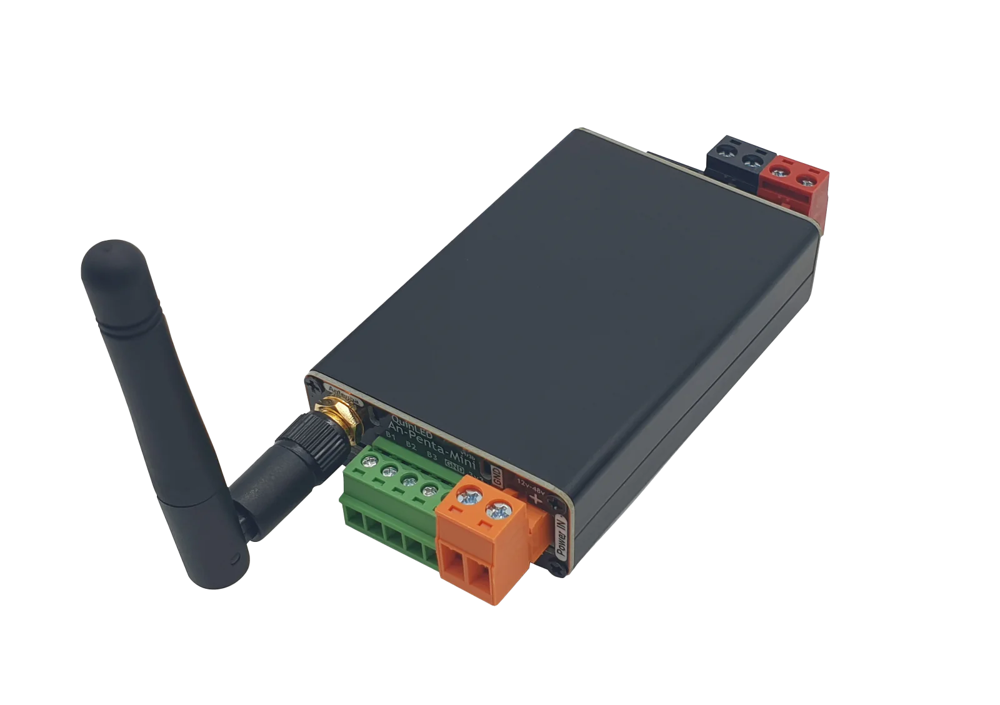

Welcome to the Web-Installer for WLED on QuinLED boards!
QuinLED An-Penta-Mini
To prepare, please plug in the An-Penta-Mini to your computer with an USB-C cable
- Plug in your An-Penta-Mini using a USB-C cable to a USB port on your computer
- Select board version you want to flash from pull-down menu
- Hit "Install" and select the "USB Serial (COMx)". No device found?
- Custom QuinLED pre-configured WLED is installed within 3 minutes!
Because of GPIO pins used WiFi configuration needs to be done using WLED-AP (password: wled1234)
If you wish to download a custom .bin file for OTA flash, you can find them here
Powered by ESP Web Tools
And a huge thank you to WLED